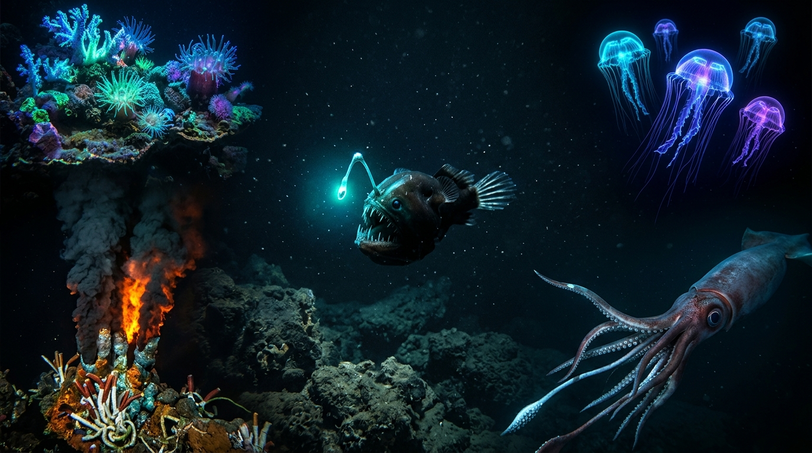

1. Esta imagem representa uma colônia de corais fluorescentes e bioluminescentes brilhando na escuridão do fundo do mar.
Descrição técnica do elemento localizado no canto superior esquerdo.
2. A imagem mostra uma chaminé hidrotermal (ou fonte hidrotermal) no fundo do oceano, onde jatos de fluidos minerais superaquecidos emergem da crosta terrestre.
Descrição técnica do elemento localizado no canto superior direito.
3. lula-gigante (Architeuthis dux) nadando nas profundezas escuras do oceano.
Descrição técnica do elemento localizado no centro da imagem.
4. A imagem mostra águas-vivas (medusas) translúcidas e brilhantes flutuando em um ambiente marinho escuro.
Descrição técnica do elemento localizado no canto inferior esquerdo.
5. A imagem mostra um peixe-pescador (também conhecido como peixe-diabo-abissal ou da ordem Lophiiformes), uma criatura marinha que vive em grandes profundidades na escuridão do oceano.
Descrição técnica do elemento localizado no canto inferior direito.